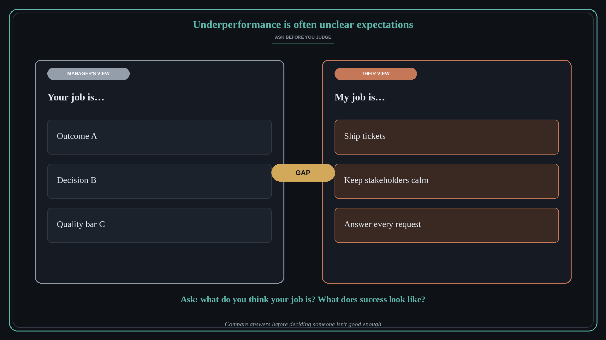

Underperformance is often unclear expectations
Source: Molly Graham (@molly_g)
original post
What it claims
A surprising amount of what looks like underperformance is really a lack of clarity. Before deciding someone is not good enough, ask them what they think their job is and whether they know what success looks like. You may find your answers are completely different from theirs.
Why it matters for a PO
POs rarely manage people directly, but they constantly judge whether a team, a vendor, or a partner is delivering. Often the real gap is that the outcome, the quality bar, or the decision rights were never made explicit. Fixing that is cheaper and fairer than escalating a performance story.
3 takeaways
- Treat a performance gap as a clarity question first and a capability question second.
- Ask people to describe their job and what success looks like in their own words.
- Mismatched answers are a briefing failure to fix, not a verdict on the person.
Practice this week
Pick one person or team whose output frustrates you. Ask them, without leading, what they think their job is and how they would know they are succeeding. Write down where their answer differs from yours and close that gap in writing.